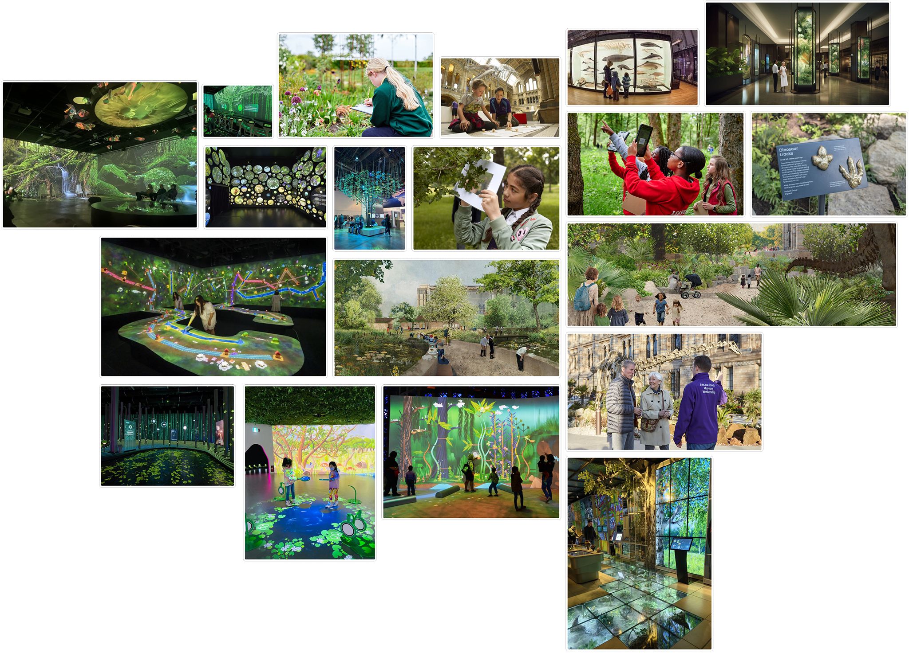
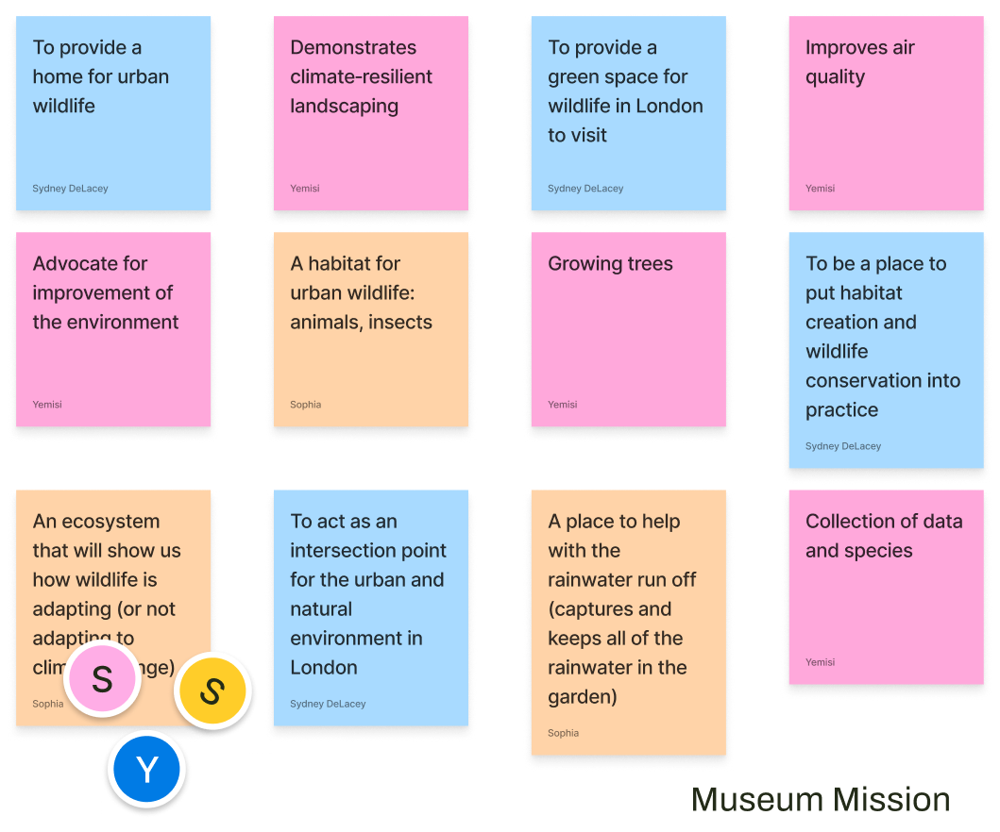
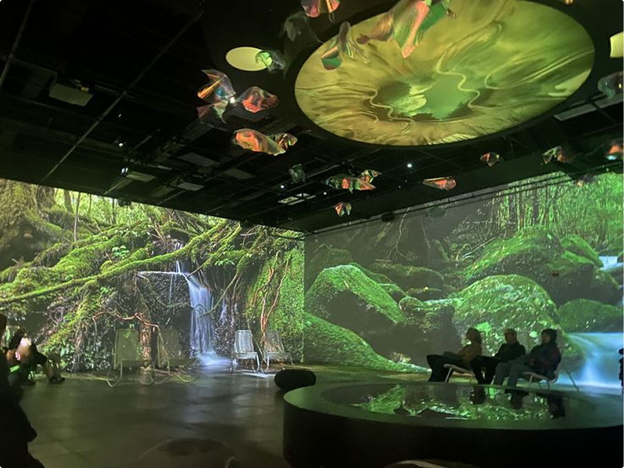
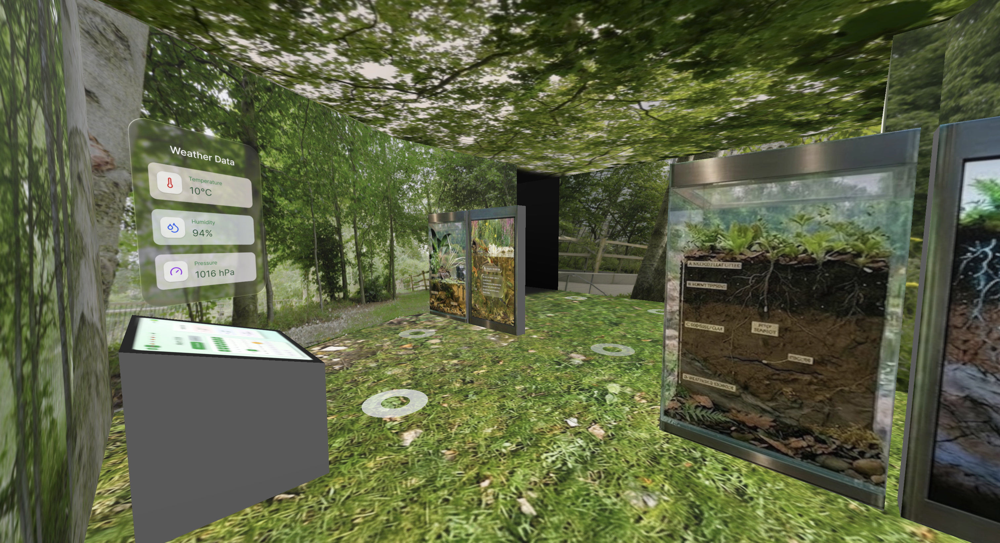

Research
Before we could begin designing anything, my team and I needed to understand the problem space. We started by individually compiling a set of sources about the Natural History Museum gardens, the Urban Nature Project, and the museum's broader work, and uploaded them into NotebookLM. From there, we each generated a podcast: a quick, conversational summary of the material we had read. This was a useful way to surface the key points.
Finding Themes
Once we had a shared baseline, we ran a more structured exercise. Each group member wrote down 20 answers to the question: What is the function of the Natural History Museum gardens? Working alone first was important, because it kept us from converging too early on the obvious answers. Together, that produced 60 statements ranging from "an education center" to "a wildlife research site."

Education Moodboard
Affinity Diagram: Museum MissionWe then carried out a thematic analysis of the full set of 60, grouping similar answers, identifying patterns, and naming the resulting clusters. Five overarching themes came out of the analysis: Education, Leisure, Research, Museum Mission, and Environmental. Each one captured a different aspect of the garden's relationship between the museum, the visitors, and the space itself.
Moodboards
To explore the themes further, we built a moodboard for each. I had expected the moodboards to be a one off output of the discovery phase, but throughout the rest of the project, we kept returning to specific images from those boards, using them as references for individual rooms, interactions, and design decisions. The themes told us what the gardens were about and the moodboards gave us a visual library to draw inspiration from.

Education Moodboard — Inspiration
Final Output — Garden Room